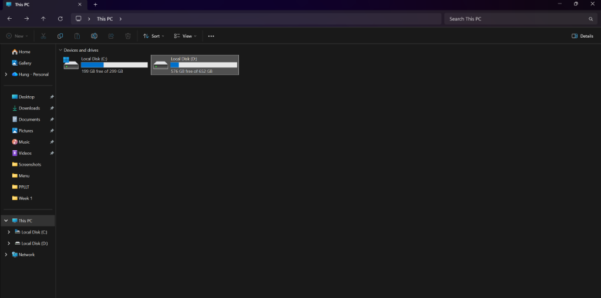
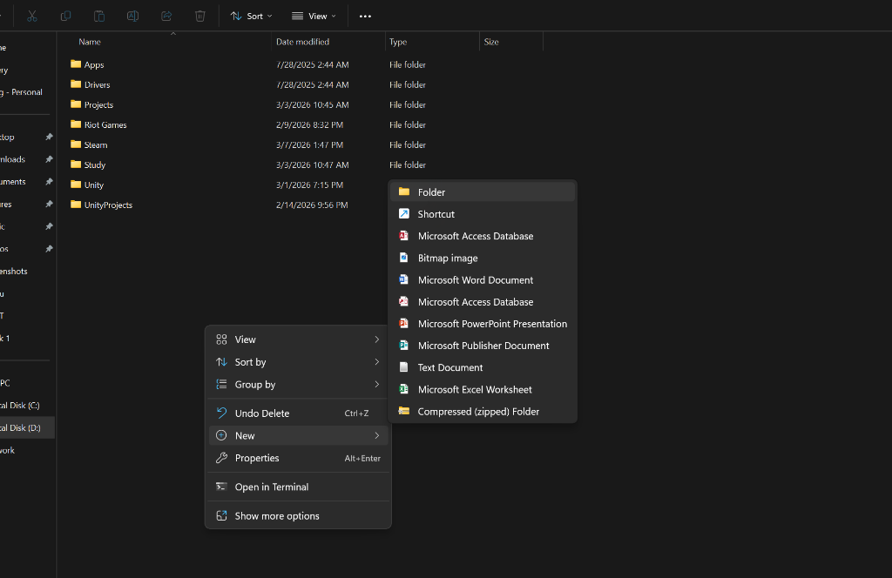
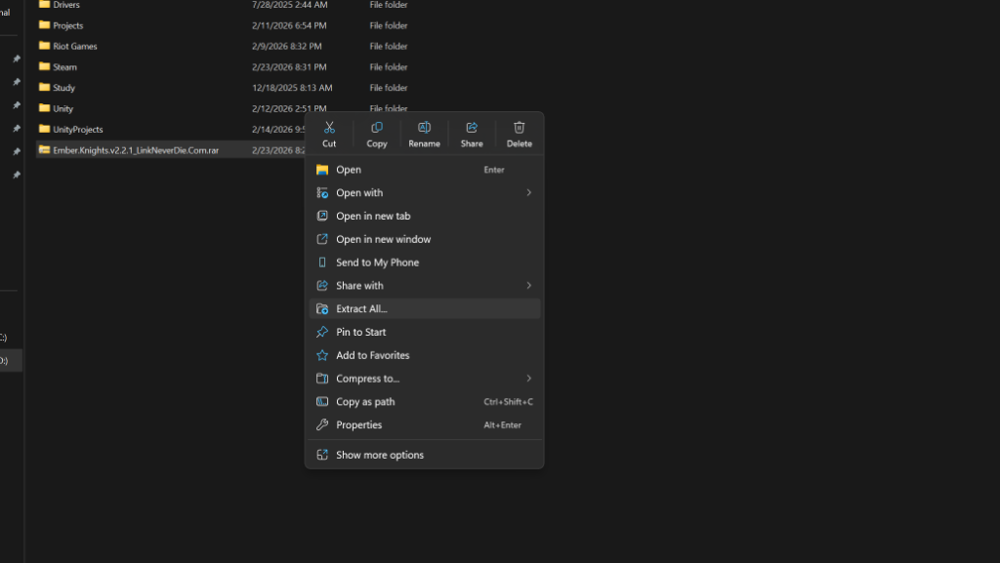
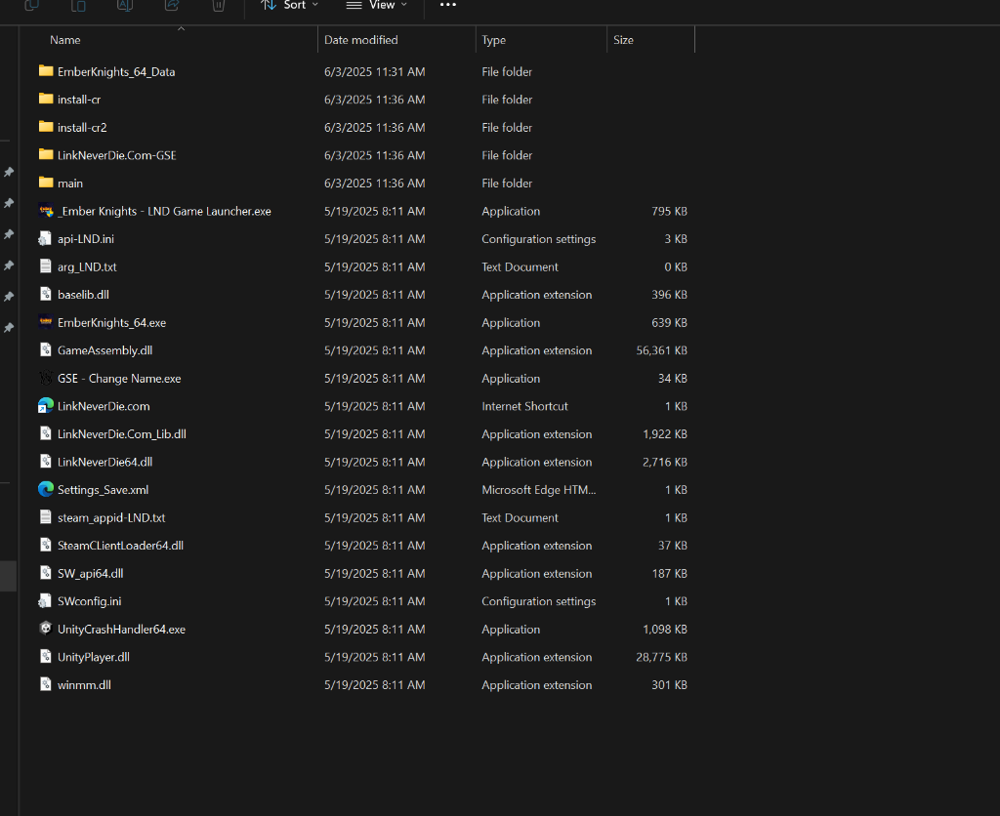
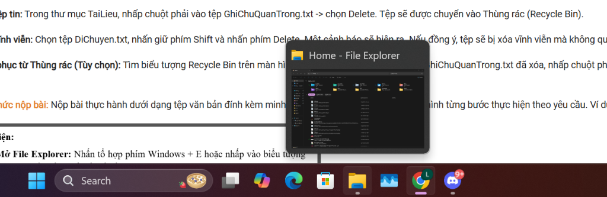

Bài tập 1 trình bày các thao tác quản lý tệp tin và thư mục cơ bản trên hệ điều hành Windows thông qua các bước thực hành trực quan.
Bắt đầu bằng việc mở File Explorer (nhấn tổ hợp phím Windows + E hoặc nhấp vào biểu tượng trên Taskbar). Giao diện này cho phép hiển thị và quản lý tổng quan các ổ đĩa trên máy tính (ví dụ: ổ C, ổ D), giúp người dùng dễ dàng định vị không gian lưu trữ và tìm kiếm dữ liệu.

Để tổ chức tài liệu một cách ngăn nắp, chúng ta có thể tạo thư mục mới bằng cách nhấp chuột phải vào vùng trống trong một thư mục bất kỳ, chọn New và sau đó chọn Folder. Đây là bước đầu tiên để xây dựng một cấu trúc lưu trữ khoa học.

Với các tệp tin được nén (như .rar hoặc .zip) tải về từ Internet, thao tác cần thiết là nhấp chuột phải vào tệp tin và chọn Extract All... (hoặc các tuỳ chọn giải nén tương đương). Việc này sẽ xuất các tệp tin bên trong ra một thư mục thông thường để có thể sử dụng.

Sau khi giải nén, chúng ta truy cập vào thư mục vừa được tạo. Tại đây, hệ thống hiển thị chi tiết các tệp tin cấu thành một ứng dụng hoặc dự án. Người dùng có thể thực hiện các thao tác quản lý nâng cao như xem thuộc tính, đổi tên, sao chép hoặc di chuyển các tệp tin (DLL, EXE, TXT) theo yêu cầu.

Bài thực hành yêu cầu sinh viên làm quen với thao tác xoá tệp (chọn tệp và nhấn Delete để đưa vào Thùng rác) và xoá vĩnh viễn (nhấn Shift + Delete). Cuối cùng là các thao tác khôi phục lại từ Recycle Bin và nén thư mục lại để nộp bài.
